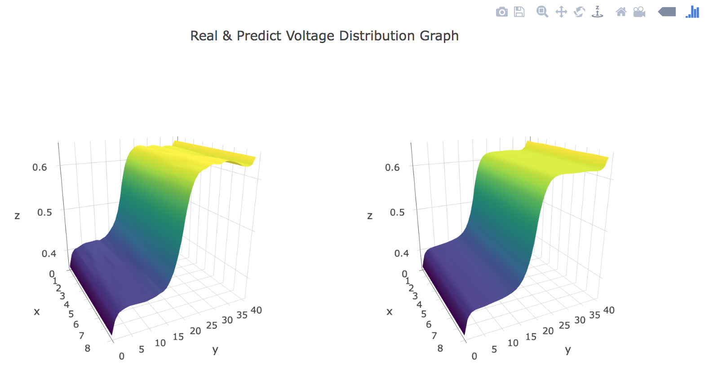
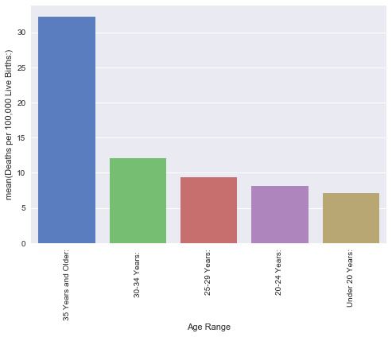
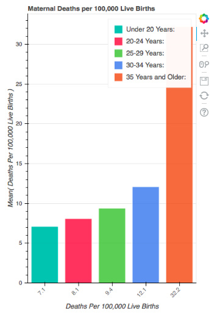
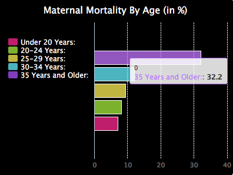
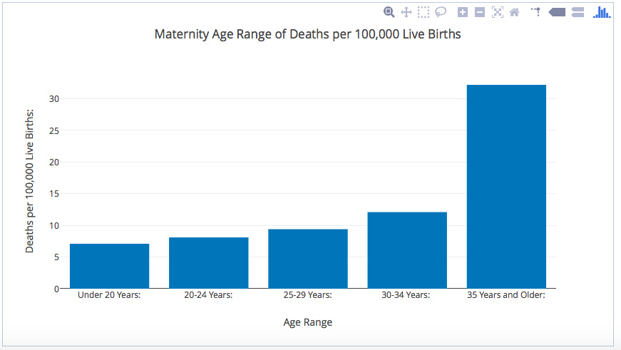

Python Data Visualization Libs Comparing
Python Data Visualization — Comparing 5 Tools
背景介绍
本次由于项目需要，要将深度学习预测出来的数据（41x9的矩阵）和Label矩阵进行对比，所以需要进行3D可视化，因而对比了几个常见的python数据可视化库。
简单说下对比结果：
-
最终采用Plotly库，因为其完美支持3D绘图，并且提供可交互的HTML5格式输出，这对于需要不断调整角度和大小的数据观察来说至关重要。效果如下图：你不但可以得到漂亮的绘图，还可以通过鼠标左右键、滚轮轻松调整尺度、方向等关键参数，更可以通过右上角的各种工具进行进一步调整。当然，其也支持3D图的Subplot。

- Plotly 库的缺点：这个库并不是完全免费的。尽管这样，基本不会影响你的正常使用，除非你用for循环高速下载成百上千张图片。其每天画图数目是无限的，不过保存只有100张限额。其有在线和离线两种模式，在线支持直接保存，离线很麻烦。另外，实际上离线会比在线更快。
- Bokeh：这个库在二位统计绘图上是有很大吸引力的。图像质量很高，提供的配色很精美，并且也支持鼠标交互，支持多幅图共享一份数据并且交互时同步变化，特色明显。但对3D画图支持较差。
下面是引文：
Introduction
Big data and analytics can be beautifully presented by using visualization tools in Python. Python is a great programming language with variety of options. It is object oriented, semantically structured and great for scripting programs as well as connecting other programmable components. Python is a favorite tool for programmers and data scientists because it’s easy to learn, and the extensive list of built-in features and importable libraries contribute to increased productivity. The Python language has been around for nearly 30 years and the numerous user contributed libraries (e.g. Pandas) have many use cases, such as image modification, data analysis, and server automation. This means that sometimes it can be really difficult to pick the right tool for data analysis or visualization and figure out which one to use. For this purpose, different visualization methods in Python have been summarized, rendered and explained. The techniques were done within the same amount of time and same data sets to demonstrate the difference between each output. The point of the comparison is to understand which visualization tool is the simplest and visually presentable at the same time.
Essential Visualization Tools
The most common type of visualization is a simple bar chart. It is popular and commonly used type of visualization to make comparison between values and variety of categories. It can be vertically or horizontally oriented by adjusting x and y axes, depending on what kind of information or categories the chart requires to present. Parameters need to be identified, such as axes, similarities, title and decided on what exactly the visualization supposed to show. To make a simple bar chart, a number some of the most popular tools and libraries that have been invented for plotting the data could be utilized. These include the most used and common tools such as: Pandas, Seaborn, Bokeh, Pygal and Ploty.
Python libraries overview with analyzed examples below contain illustrative samples of the tools with data-set taken from Women’s Health USA. The data includes maternal mortality rates evaluated by age in five rows and titles in two columns to keep it simple. Same data set is being used for all examples that are demonstrated below. Additionally, just like any other programming language issues, errors or questions with the libraries can be found on stack overflow page by Google search.
Pandas
First tool is Pandas. The Pandas name is derived from panel data, a term for multidimensional structured data-set. It is a free software that was developed by Wes McKinney in 2008 while working at Applied Quantitative Research Capital Management global firm based in Greenwich, Connecticut, United States. It all started when the company needed a productive, easy to use tool to analyze quantitative data on financial data-sets. By the end of 2009, Wes McKinney convinced management to permit him to open source the library and it is being supported by other contributors ever since, to make it even better.
The Pandas library became highly optimized for usage, with useful written code that provides high function and rich data structured design. It is fast and easy to implement and contains a software library that is used within Python for powerful data analysis and manipulating data visualization.
The main feature of Pandas is data-frame that supplies built in options for plotting visualization in two dimension tabular style. It is column oriented with row and columns structured style. Pandas works great with other libraries to create a wide variety of plots. Pandas data structure can have different written values as well as labels and their axes.
To start the data visualization, first step is to load the library and import the data. Usually, the data stored in .csv (comma separated values) file, where each column is separated by comma, and each row by a new line. To create a bar plot with Pandas the following Python input code can be used.
import numpy as np
import pandas as pd
mortality_age = pd.read_csv(“mortality_by_age.csv”)
mortality_age = mortality_age.sort_values(‘Deaths per 100,000 Live Births:’, ascending = False)[:5]
mortality_age.plot(kind = “bar”)
That code executes the plot with detailed columns and title with default colors and background. Figure 1 shows the following plot output.

Pandas Simple Bar Chart Input Example
The simple form of this plot looks acceptable and easy to read. The bar chart looks nice and clean. However, it is impossible to customize the graph into more detailed visualization just by using Pandas.
Seaborn
Second tool is Seaborn. This tool integrates great with Pandas. It was invented and developed by Michael Waskom in 2014. It is another open-source software library for data analysis and visualization. Seaborn is a popular library for making appealing statistical data graphs in Python. It provides high level of graphic interface for drawing platform and helps to easily identify patterns and draw attention to key elements. It includes built in themes for styling of informative data plots. It uses grid object method that connects the structure of the figure to the visual structure of the given data set. The main goal of this method is to simplify complicated plots. Additional, Seaborn offers variety of styles that allow to modify colors and make it look even more appealing.
To run the example, the following code below is needed:
import pandas as pd
import seaborn as sns
import matplotlib.pyplot as plt
mortality_age = pd.read_csv(“mortality_by_age.csv”)
mortality_age = mortality_age.sort_values(‘Deaths per 100,000 Live Births:’,
ascending = False)[:5]
sns.set(style=”darkgrid”)
mortality_age_plot = sns.barplot(x=mortality_age
[“Age Range”], y=mortality_age[“Deaths per 100,000 Live Births:”],
palette = “muted”, order=mortality_age[“Age Range”].tolist())
plt.xticks(rotation=90)
plt.show()
That code executes the plot with detailed titles, nicely colored bars and grid. Figure 2 shows what the bar chart looks like.

Seaborn Simple Bar Chart Input Example
This method made it possible to rotate x and y axis to make the categories and titles readable. The visual graphic looks appealing and more exciting than the previous one.
Bokeh
Third tool is Bokeh. It is different from the previous two methods. It was developed by Anaconda’s development team in 2012 with funding from Defence Advanced Research Projects Agency. Bokeh is an open source and free to use for any type of project. It is versatile, integrates great with javascript and novel graphics style. It is an interactive library that was created for modern web browsers to visualize highly interactive plots and data applications. Bokeh’s method can create any kind of graphical plot including dash boards and variety of charts.
The simple visualization of a bar chart is in the example below. It shows the standard method to plot the data.
from bokeh.charts import Bar, output_file, show
mortality_age = pd.read_csv(“mortality_by_age.csv”)
data = {
‘Age Range’: mortality_age[‘Age Range’],
‘Deaths per 100,000 Live Births’: mortality_age[‘Deaths per 100,000 Live Births:’]
}
# x-axis labels pulled from the interpreter column, stacking labels from sample column
bar = Bar(data, values=’Deaths per 100,000 Live Births’,
label=’Deaths per 100,000 Live Births’,
stack=’Age Range’, agg=’mean’,
title=”Maternal Deaths per 100,000 Live Births”,
legend=’top_right’, width=400)
output_file(“barchart.html”)
show(bar)
The code opens up a browser’s window and displays an HTML page with the plot. Figure 3 below displays the plotted output.

Bokeh Simple Bar Chart Output Example
The graph looks much nicer and cleaner. Bokeh method has a lot of customization option and functionality. Even thought it looks nice, it does not make sense to use for a simple bar visualization.
Pygal
Forth tool is Pygal. It is a part of Python’s library that exports vector charts in different shapes and styles. It was created by a developer named Florian Mounier in 2012. It is also an open source free library and has been widely used because of its high customization options and simplicity at the same time. Options for creating visualizations are wide open and include pie charts, bar graphs, histograms, maps and so on. It all depends on the required look and feel of the graphic.
To create a simple bar chart the following input code can be used:
import pygal
horizontalbar_chart = pygal.HorizontalBar()
horizontalbar_chart.title = ‘Maternal Mortality By Age (in %)’
horizontalbar_chart.add(‘Under 20 Years:’, 7.1)
horizontalbar_chart.add(‘20–24 Years:’, 8.1)
horizontalbar_chart.add(‘25–29 Years:’, 9.4)
horizontalbar_chart.add(‘30–34 Years: ‘, 12.1)
horizontalbar_chart.add(’35 Years and Older:’, 32.2)
horizontalbar_chart.render()
The output of the vector file looks really nice and visually appealing in style. It does not provide a zooming effect same as in the previous method, however it includes tool-tip hover state. It can be embedded into a web-page by using tag or code. Figure 4 displays the plotted output.

Pygal Simple Bar Chart Input Example
The interactive and vector nature of the image could be utilized widely in websites and data applications.
Plotly
Fifth tool is Plotly, also named as Plot.ly because of its main platform online. It is an interactive online visualization tool that is being used for data analytics, scientific graphs and other visualization. It contains a great API including one for Python. There are lot of interactive, professional quality visualizations online that were created with this module.
Plotly was developed by multiple developers, including Alex Johnson, Chris Parmer, Jack Parmer and Matthew Sundquist. The tool was named one of the ‘’Top 20 Hottest Innovative Companies in Canada’’ by the Canadian Innovation Exchange.
It is different from other Python’s libraries by being an interactive online tool for creating the renderings. Therefore, everything that is being created with this tool is posted on the web. The great thing about Plotly is that it integrates well with pandas.
The simplest way to use it is through Plotly’s online tools and import the data by uploading the data set file. It has many convenient features to interact with, extract and visualize the data. Additionally, the tool accepts many formats, such as .xls, .xlsx, or .csv files.
Figure 5 shows the user interface and settings within the dashboard of the online tool.

Plotly User Interface Tool Online
Figure 5 above shows the resulted bar chart after executing provided parameters setup and imported data sets file.
The process generated an amazing and beautiful highly interactive bar chart with tool-tips and varieties of other tool options such as zooming effect, panning, selecting, auto-scale, moving, resetting and so on. It is easily modified by clicking on different parts and parameters of the graph without code knowledge.
Conclusions
All the Big Data without proper visualization extremly difficult to analyze. Python is one of the most innovative and popular tool for data visualization. The good news that it does not take much to create visualization in Python since this language has been around for over twenty years and accumulated exclusive libraries. There are multiple tools and options to visualize the data. However, having variety of options complicates the matter and create confusion for users. Identifying proper method that should be used depends on a project requirements and expectations. The proper way is to test different techniques and understand which one is appropriate.
Various visualization methods have been demonstrated by using same data-set to plot a simple bar chart. By using most common techniques demonstrated here, Pandas is the simplest method for basic plots. While Seaborn is great for creating visually appealing statistical charts that include color. Bokeh works great for more complicated visualizations and ideal for web based interactive presentations. Pygal works well for generating vector and interactive files. However, it does not have flexibility as other methods. Plotly is the most useful and easiest option for creating web based highly interactive visualizations.